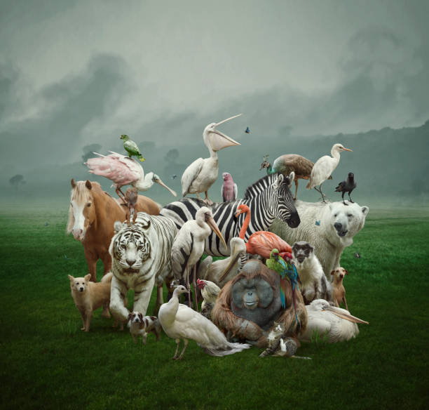
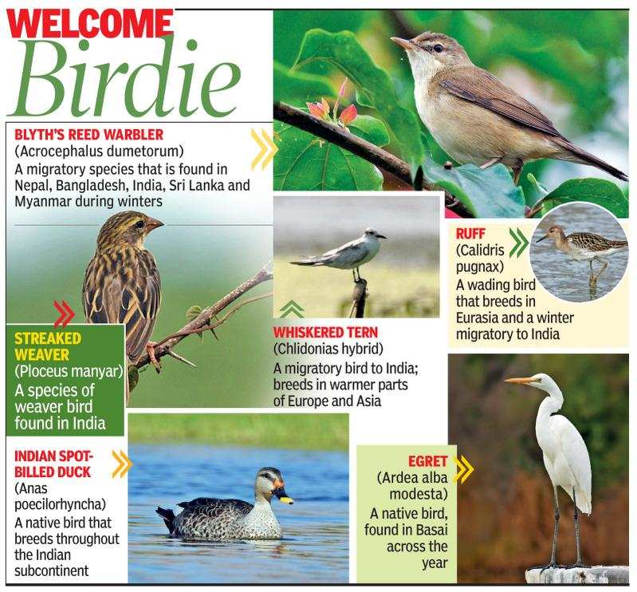

Animal Life
There are millon of different types of animals that live on Earth.Some animal like amoeba are very tiny and can only be seen through a microscope. Some such as the blue whale are huge-many times the size of a elephant.Animals live in different kinds of surroundings.they are found in forests,rivers,seas,ponds,deserts,mountains,snow covered areas,air and even in our homes.
The surroundings in which we live or survive is its habitat.Animals have different features that help them to survive in their specfic habitat
Diffrent Body Coverings
Some animals such as snails,turtles and bodies.Fish and reptiles have scales to them.Fish have thin scales and reptiles have hard leathery scales.Birds have feathers to protect them,keep them warm and help them to fly.Mammals have hair on their bodies to protect them and keep them warm .Animals like polar bears have thick covering of hair called fur.
Diffrent Eating Habits
Diffrent animals eat differents kinds of food to stay alive.The mouth parts of animals are adapted to kind of food they eat.
Animals that Eat Plants
Animals such as cow,sheep,goat,zebra and horse eat plants. animal, or organism who mainly eats plants.” This includes all types of plants and parts of plants from fruits and seeds to leaves and stems. Check out some common herbivore examples to see how these plant eaters survive and thrive.
Animals that eat other animals
carnivore is an animal or plant that eats the flesh of animals. Most, but not all, carnivorous animals are members of the Carnivora order; but, not all members of the Carnivora order are carnivorous. ... For example, most bears are omnivores, which means they eat both plants and meat.
Animals that both Plants and animals.
Animals that eat both animals and plants are called omnivores. This type of animal has the advantage of a wide selection of food to satisfy their hunger and dietary needs. Some scientists call omnivores “opportunistic eaters.” This means that they can and will eat almost anything that is around when they are hungry.
Diffrent Methods Of Breathing
Animals that breath through lungs
ALL VERTEBRATES (animals with a spinal cord, including humans) on land breathe with LUNGS. When you take a breath, a muscle below the rib cage called the DIAPHRAGM presses downward to allow air to fill the lungs, two hollow organs on either side of the heart.
Animals That Breath Through Moist skin
amphibians class includes toads and frogs, salamanders and newts, and caecilians. Almost all amphibians have thin, moist skin that helps them breathe.
Animals that breath through body holes
Animals such as centipedes, caterpillars, crabs and scorpions do not use their mouths to breathe. They have many little “breathing holes” all over their body, which are called spiracles.
Animals That breath through gills
Primarily fish, but also crabs and mollusks use their gills to breathe. Larvae such as tadpoles and the larvae of dragonflies, which live in the water at first, also use their gills to breathe.
Diffrent methods of moving
Animals that move on land
animals that often live on land and in the water, but several other animals thrive in both domains as well, including crocodilians, turtles and even some fish.
Animlas that can fly
Some Mammals. Bats are the only freely flying mammals. A few other mammals can glide or parachute; the best known are flying squirrels and flying lemurs.
Animals that can swim
Aquatic animals live in the water and depend on it for survival. There are various groups of aquatic animals including fish, mammals (whales), mollusks (sea snails), cnidarians (jellyfish), and crustaceans (crabs). They either live in fresh water or salt water and can be either vertebrates or invertebrates.
these are some animals that migrate to India.
Done By Shrinand Rajesh
Thank You